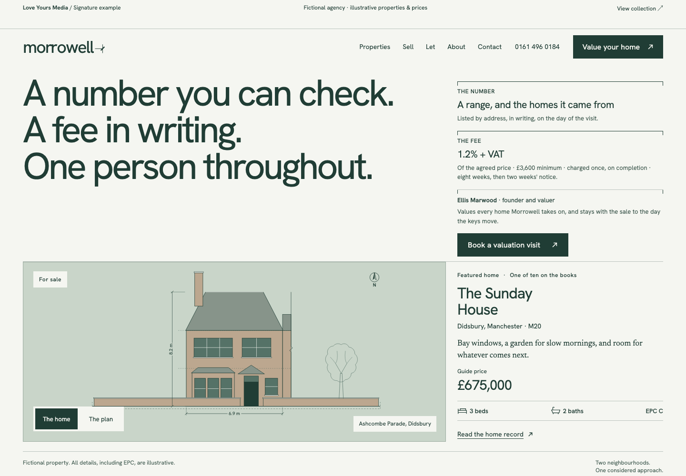
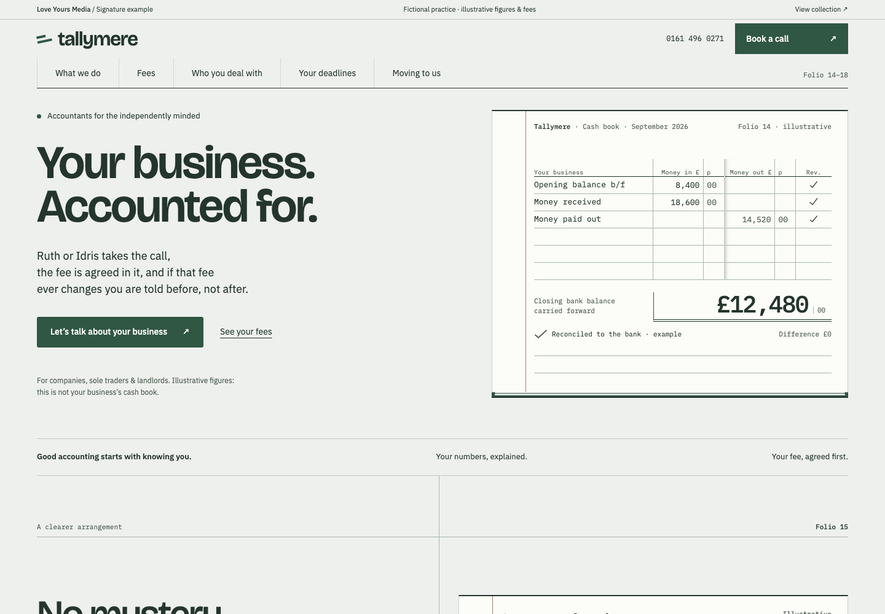

Independent studio / Design & development
Good design makes
the next step clear.
Distinctive websites, built around the people who use them. A selection of complete, fictional business studies by Love Yours Media.
↓Selected studies
01 — 02A closer look
Two identities. Every page considered.01 / PropertyMorrowell
A quieter kind of estate agency. Architectural drawings, transparent fees and a property journey with room to breathe.
- 10 connected pages
- Property filters & floor plans
- Responsive navigation
Explore Morrowell ↗Fictional business · Illustrative listings
morrowell / homepage
tallymere / homepage
02 / Professional servicesTallymere
Accounting with a human voice. A ledger-inspired identity turns complex information into a calm, legible experience.
- 12 connected pages
- Fees & sector journeys
- Browser-only enquiry demo
Explore Tallymere ↗Fictional practice · Illustrative figures
The thinking behind the work
Designed with intent.
Built to be used.
01Identity before decoration
Type, colour and composition belong to the business. Each study has its own visual language.
02A complete journey
Homepages lead somewhere useful: services, detail pages, fees and a clear next step.
03Care in the details
Local fonts, keyboard focus, reduced-motion support and layouts made for small screens as well as large ones.